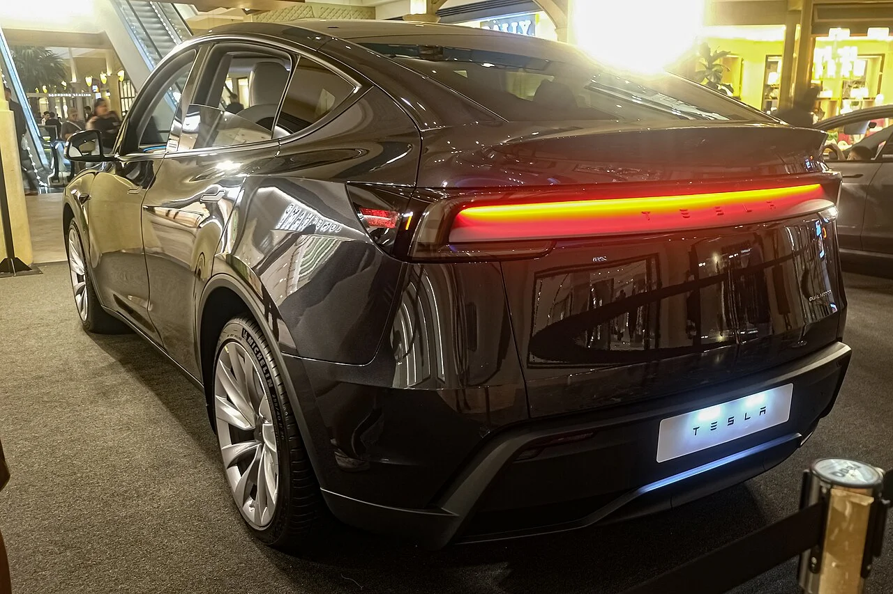

▲ 테슬라 차량의 중앙 디스플레이. FSD 라이트는 무선 업데이트로 기존 차량에도 적용됐다 ⓒ Ethan Llamas, Wikimedia Commons (CC BY-SA 4.0)
테슬라가 지난 7월 11일 감독형 자율주행 기능 'FSD 라이트'를 한국에서 전격 출시했습니다. 미국을 시작으로 캐나다, 중국 등에 이어 세계 7번째 도입국이지만, 미국 본토 외 지역에서는 첫 사례라는 점에서 상징성이 큽니다. 그러나 화제성만큼이나 안전성을 둘러싼 논란도 함께 커지고 있는데, 자세한 내용을 정리했습니다.
1. 갑작스러운 출시 — 미국 외 지역 세계 최초
지피코리아 보도에 따르면, 테슬라는 한미 자유무역협정(FTA) 관련 조항을 근거로 지난 7월 11일 FSD 라이트를 국내에 전격 출시했습니다. 무선 소프트웨어 업데이트 방식으로 적용돼 국내에 이미 등록된 테슬라 차량 약 5만 대가 별도 하드웨어 교체 없이 곧바로 이 기능을 사용할 수 있게 됐습니다. 2021년 미국에서 처음 시작해 캐나다, 중국 등을 거친 FSD가 미국 본토를 벗어난 지역에 정식 도입된 것은 한국이 처음입니다.
2. 안전성 논란 — "사고 나면 책임은 운전자 몫"

▲ 테슬라 모델Y. FSD 라이트는 한국 도로 환경에 대한 별도 검증 없이 전격 도입됐다는 지적을 받고 있다 ⓒ Chanokchon, Wikimedia Commons (CC BY-SA 4.0)
가장 큰 논란은 안전성입니다. 관련 세미나에 참석한 전문가들은 "시민들의 안전을 보호할 만한 기본적인 안전책도 없이 우리나라 일반 도로가 테슬라의 놀이터가 됐다"고 강하게 비판했습니다. 해외에서 개발된 자율주행 소프트웨어는 통상 한국 도로 환경에 맞춘 별도 검증 절차가 추가로 요구되는데, FSD 라이트는 이런 과정 없이 사실상 곧바로 도입됐다는 지적입니다. 사고가 발생했을 때 법적 책임이 전적으로 운전자에게 돌아가고, 테슬라 측의 책임 소재는 불분명하다는 점도 문제로 꼽힙니다.
실제로 SNS와 유튜브에는 FSD 라이트 체험 영상이 잇따라 올라오고 있는데, 일부 영상에서는 아슬아슬한 주행 장면이 담기기도 합니다. 그럼에도 시청자들의 반응은 위험성에 대한 우려보다는 신기술에 대한 신기함과 기대감이 앞선다는 것이 지피코리아의 분석입니다.
3. 앞으로의 과제 — 규제 정비가 관건

▲ 테슬라 모델Y 후면부. 산업연구원은 FSD 확산이 국내 완성차 업계에 미칠 영향을 우려하고 있다 ⓒ Ethan Llamas, Wikimedia Commons (CC BY-SA 4.0)
오토트리뷴 보도에 따르면, 산업연구원 역시 FSD 확산이 국내 완성차 업계에 미칠 영향을 우려하는 목소리를 낸 바 있습니다. 자율주행 기술 경쟁에서 뒤처지지 않으면서도 국내 도로 환경에 맞는 안전 기준과 사고 책임 소재를 명확히 하는 규제 정비가 시급하다는 지적이 나오는 이유입니다. 신기술 도입 속도와 안전성 검증 사이의 균형을 어떻게 맞출지가 앞으로 FSD 확산의 핵심 변수가 될 전망입니다.